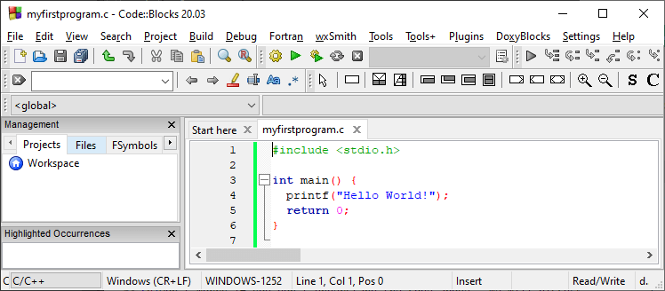

Hướng dẫn cài đặt C
Cài đặt lập trình C không khó. Bài viết sẽ hướng dẫn bạn chi tiết cách
cài C để lập trình và phát triển phần mềm nhé!
Để bắt đầu dùng C, bạn cần chuẩn bị 2 điều kiện:
-
Một trình chỉnh sửa văn bản như Notepad để viết code C.
-
Một trình biên dịch như GCC để biên dịch code C thành ngôn ngữ máy tính hiểu được.
Hiện có nhiều trình chỉnh sửa văn bản và biên dịch cho bạn lựa chọn. Tuy nhiên, đối với cài đặt C, IDE thường được dùng nhất.
IDE cài đặt C
Một IDE (Integrated Development Environment) - Môi trường phát triển
tích hợp được dùng để chỉnh sửa và biên dịch code.
IDE phổ biến bao gồm Code::Blocks, Eclipse, Visual Studio.
Tất cả đều miễn phí và có thể được dùng để chỉnh sửa và gỡ lỗi code C.
Lưu ý: IDE dựa trên web có thể hoạt động tốt nhưng chức năng
của nó bị giới hạn. Bạn có thể dùng Code::Blocks trong hướng dẫn này.
Hãy tải phiên bản mới nhất của nó. Download mingw-setup.exe sẽ cài trình
chỉnh sửa text với một trình biên dịch.
Hướng dẫn nhanh cách tạo file C
Để tạo file C đầu tiên: Mở Codeblocks và tới File > New > Empty File. Viết code C sau và lưu tập tin dưới dạng myfirstprogram.c (File > Save File as):
myfirstprogram.c
#include < stdio.h >
int main() {
printf("Hello World!");
return 0; }
Đừng lo nếu bạn không hiểu code ở trên vì chúng sẽ được thảo luận chi tiết ở những bài viết sau. Giờ chỉ cần tập trung vào cách chạy code. Trong Codeblocks, nó sẽ trông như thế này:
Sau đó, tới Build > Build and Run để chạy (execute) chương trình này. Kết quả trông sẽ như sau:
Hello World!
Process returned 0 (0x0) execution time : 0.011 s
Press
any key to continue.
Chúc mừng! Bạn đã viết và chạy được chương trình C đầu tiên rồi đấy.
Cài đặt để chạy trên Command Prompt
Nếu bạn muốn cài đặt để biên dịch và chạy trên Command Prompt, thì bạn
nên đọc phần sau đây.
Nếu bạn đang muốn cài đặt chương trình C,
bạn cần phải sử dụng 2 phần mềm trên máy tính của bạn: (a) Chương trình
soạn văn bản - Text Editor và (b) Bộ biên dịch C.
Text Editor
Được sử dụng để soạn thảo các chương trình. Ví dụ về một vài trình
editor như Window Notepad, Notepad ++, vim hay vi…
Tên và các phiên bản của các trình editor có thể thay đổi
theo các hệ điều hành. Ví dụ, Notepad được sử dụng trên Windows, hoặc
vim hay vi được sử dụng trên Linux hoặc UNIX.
Các file bạn tạo trong trình editor được gọi là source file
(file nguồn) và chứa các chương trình code. Các file trong chương trình
C thường được đặt tên với phần mở rộng ".c".
Trước khi bắt đầu chương trình của bạn, hãy chắc chắn bạn có
một trình editor trên máy tính và bạn có đủ kinh nghiệm để viết các
chương trình máy tính, lưu trữ trong file và thực thi nó.
Text Editor
Được sử dụng để soạn thảo các chương trình. Ví dụ về một vài trình
editor như Window Notepad, Notepad ++, vim hay vi…
Tên và các phiên bản của các trình editor có thể thay đổi
theo các hệ điều hành. Ví dụ, Notepad được sử dụng trên Windows, hoặc
vim hay vi được sử dụng trên Linux hoặc UNIX.
Các file bạn tạo trong trình editor được gọi là source file
(file nguồn) và chứa các chương trình code. Các file trong chương trình
C thường được đặt tên với phần mở rộng ".c".
Trước khi bắt đầu chương trình của bạn, hãy chắc chắn bạn có
một trình editor trên máy tính và bạn có đủ kinh nghiệm để viết các
chương trình máy tính, lưu trữ trong file và thực thi nó.
Bộ biên dịch C
Mã nguồn được viết trong file nguồn dưới dạng có thể đọc được. Nó sẽ
được biên dịch thành mã máy, để cho CPU có thể thực hiện các chương
trình này dựa trên các lệnh được viết.
Bộ biên dịch được sử dụng để biên dịch mã nguồn (source
code) của bạn đến chương trình có thể thực thi. Tôi giả sử bạn có kiến
thức cơ bản về một bộ biên dịch ngôn ngữ lập trình.
Bộ biên dịch thông dụng nhất là bộ biên dịch GNU C/C++, mặt
khác bạn có thể có các bộ biên dịch khác như HP hoặc Solaris với Hệ điều
hành tương ứng.
Dưới đây là phần hướng dẫn giúp bạn cách cài đặt bộ biên
dich GNU C/C++ trên các hệ điều hành khác nhau. Tôi đang đề cập đến
C/C++ bởi vì bộ biên dịch GNU gcc hoạt động cho cả ngôn ngữ C và C++.